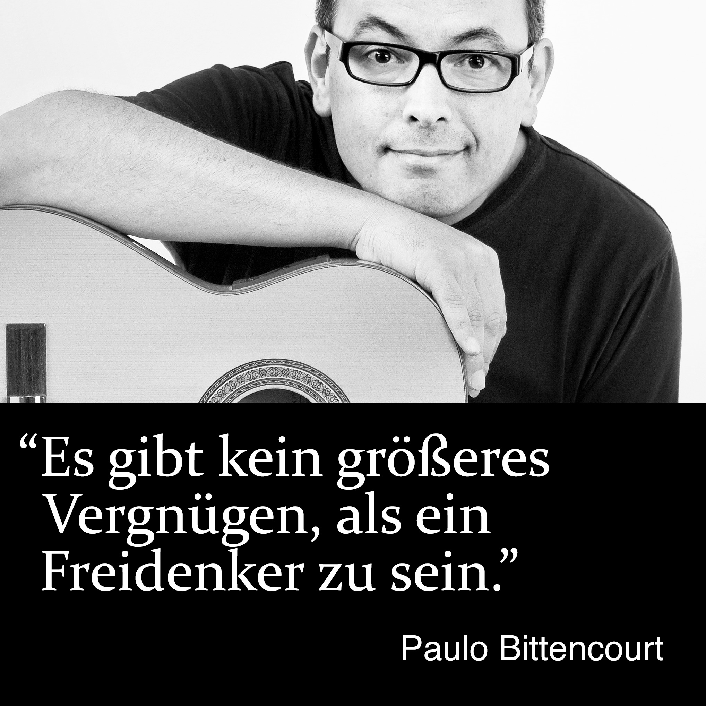

Wer zum Teufel ist Paulo Bittencourt?
Berufsqualifikation
Als Bub träumte ich davon, Comic- und Trickfilmzeichner zu werden. Im Alter von dreizehn Jahren arbeitete ich als Illustrator bei einer Zeitung und einer graphischen Kunstanstalt meiner Heimatstadt, Castro, in Brasilien.
Im Jahr 1989, nach fünf Semestern an einer Theologischen Fakultät, in São Paulo, brach ich das Studium ab und zog nach Europa. Ich lebte vorübergehend in Portugal, Frankreich, England und Deutschland bis ich im darauffolgenden Jahr nach Österreich ging, um Deutsch zu studieren, wo ich mich dann niederließ.
Im Jahr 1992, ohne jegliche musikalische Ausbildung, bestand ich die Aufnahmeprüfung der Fakultäten für Sologesang und Oper des Konservatoriums der Stadt Wien. In meiner Abschlussprüfung spielte ich den Grafen Almaviva in der Oper Die Hochzeit des Figaro von Wolfgang Amadeus Mozart.
Berufliche Tätigkeit
Während meines Studiums sang ich in professionellen Chören, mit Auftritten in Österreich, Israel, Italien, Japan und den USA, wie im Concentus Vocalis Chor mit dem Israel Philharmonic Orchestra, unter der Dirigentschaft von Theodor Guschlbauer, in Tel Aviv und Jerusalem, im Arnold Schoenberg Chor mit den Wiener Philharmonikern, unter der Dirigentschaft von Seiji Ozawa, im Wiener Konzerthaus und in der Carnegie Hall, in New York, sowie in einer eigenständigen Produktion von Jacques Offenbachs Orpheus in der Unterwelt, mit einer einmonatigen Tour durch Japan.
Als Solist sang ich im Schubert-Saal des Wiener Konzerthauses, mit Werken von Heitor Villa-Lobos, und im Wiener Bösendorfer Saal, mit Werken von Villa-Lobos und Oscar Lorenzo Fernández. Ich trat in verschiedenen Theatern auf, wie im österreichischen Stadttheater Baden und dem Wiener Theater Akzent, wo ich Der König in Carl Orffs Die Kluge, Der Vater in Engelbert Humperdincks Hänsel und Gretel, Figaro in Gioachino Rossinis Der Barbier von Sevilla und Guglielmo in Mozarts Così Fan Tutte sang und spielte.
Im Jahr 1995 wurde ich vom größten deutschsprachigen Theater, dem Wiener Burgtheater, engagiert, wo ich in Stücken wie Bertolt Brechts Die Dreigroschenoper, Offenbachs Orpheus in der Unterwelt, Elfriede Jelineks Ein Sportstück und William Shakespeares Troilus und Cressida sang und spielte.
Als Autodidakt an der Gitarre bin ich Interpret der Klassiker der Bossa Nova, wie der Kompositionen von Antônio Carlos Jobim und Vinícius de Moraes, und der Lieder von Chico Buarque.
Als Voice-Over-Künstler bespreche ich Unternehmensvideos internationaler Konzerne, wie Plasser & Theurer, TGW Logistics, Doka und Lyoness.
Als Fotograf sind meine Lieblingsmotive Straßenfotografie, Porträts und Landschaften. Ich wurde beauftragt, ein Orchester und eine Opernsängerin während eines ihrer Auftritte an der Wiener Volksoper zu fotografieren.
Bücher
Ich sehe mich als Freidenker und bin der Autor der Bücher↗︎ Liberated from Religion (Befreit von Religion), Wasting Time on God (Zeit mit Gott Verschwenden) und Com Zeus Não Se Brinca (Mit Zeus Spielt Man Nicht).
Videos
Ich verbreite das Freidenkertum auch durch meinen Kanal↗︎ auf YouTube.
Kampf Gegen Diskriminierung
Nachdem ich 25 Jahre in Österreich gelebt hatte, im Jahr 2015 entschied ich mich, österreichischer Staatsbürger zu werden und entdeckte, dass Daueraufenthalt und perfekte Beherrschung der deutschen Sprache nicht mehr ausreichten. Einige Jahre zuvor wurde das Gesetz geändert, um von Ausländern ein hohes Einkommen zu verlangen. Nach dem neuen Gesetz hätten 70% der Österreicher selbst nicht die Mittel, um eingebürgert zu werden. Angesichts dieser offensichtlichen Inkohärenz, die darüber hinaus diskriminierend ist, da sie legalisierte und integrierte Zuwanderer daran hindert, zu wählen, war ich Gegenstand mehrerer Berichte im Fernsehen, Radio, Zeitungen und Zeitschriften. Über meinen Fall wurde im österreichischen Parlament eine Rede gehalten. SOS Mitmensch, eine österreichische Menschenrechtsorganisation, hängte in ganz Wien Plakate mit meinem Bild auf. Nicht lange danach wurde ich Bürger von Österreich.
¿Bitencourt oder Bittencourt?
Bitencourt mit einem t oder Bittencourt mit Doppel-t? Herkunft und Bedeutung des Familiennamens Bittencourt.